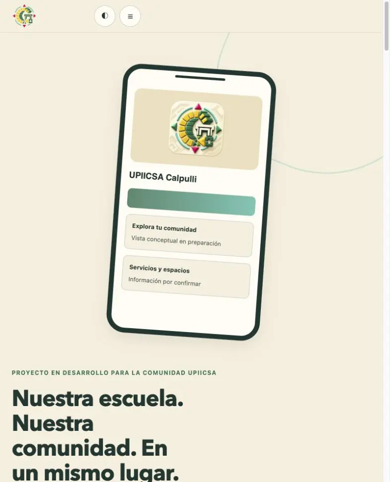

Publicado · en mejora continua
UPIICSA CALPULLI
Una experiencia académica donde funciones y territorio se leen como una sola.

1 · El problema
Qué había que resolver
Calpulli necesita que sus funciones y su territorio puedan leerse como una sola experiencia.
2 · Qué se hizo
Lo que construimos
- Sitio estático publicado.
- Contraste y cambio de tema mejorados.
- Logotipo de Calpulli como ícono del sitio.
3 · Estado actual
Qué funciona hoy
- Sitio publicadopublicado
- Funcionesprevistas
- Mapaprevisto
Mejora continua
Bitácora
Cada ajuste queda registrado. Este caso se publicó y sigue mejorando.
Se actualizó la ruta del ícono para Safari.
Se usó el logotipo de Calpulli como ícono.
Se mejoraron el contraste y el cambio de tema.
Se corrigió la carga de estilos y se publicó el sitio compilado.
Resultados [PENDIENTE: resultados medidos de UPIICSA CALPULLI, solo si existen datos reales]